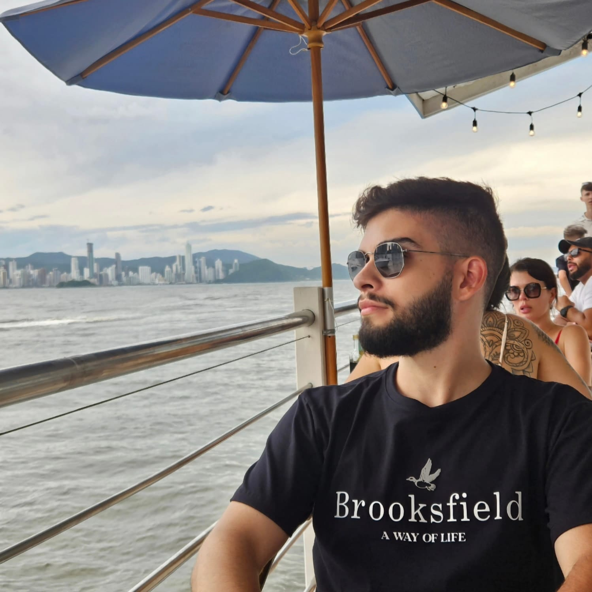
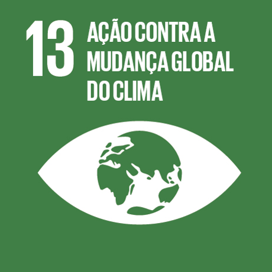
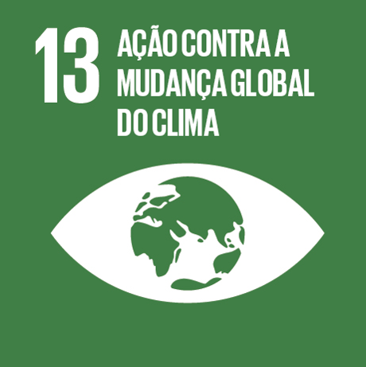

Matheus Ferreira Alphonse dos Anjos

Resumo
Estudante de engenharia de computação na Universidade Tecnológica Federal do Paraná, Campus Cornélio Procópio(UTFPR-CP).
Meus principais interesses de aprendizado são análise de dados, desenvolvimento front-end e técnicas ágeis.
ODS que pretendo contribuir
 ODS 4 - Educação e Qualidade
ODS 4 - Educação e Qualidade
 ODS 8 - Trabalho decente e crescimento econômico

ODS 13 - Ação contra a mudança global do clima
ODS 8 - Trabalho decente e crescimento econômico

ODS 13 - Ação contra a mudança global do clima
Habilidades
- Análise de Dados
- Aprendizado Rápido
- Desenvovilmento front-end
Educação
- Ensino Médio
- Colégio Paraguaçu - Sistema Anglo de Ensino
- 2019 - 2021
- Bacharelado em Engenharia de Computação
- UTFPR-CP
- 2022 -
Hobbies
- Esportes
- Séries e filmes
- Jogos Online
Links Adicionais
Matheus Alphonse, 2024